Help Documentation
Catalogue
Start
>> Projects
>> Settings
>> Stitching
>> History
>> Go
Further >> Other
A. Start
1£ÆLanguage
The
software can be switched to simplified Chinese and English versions.
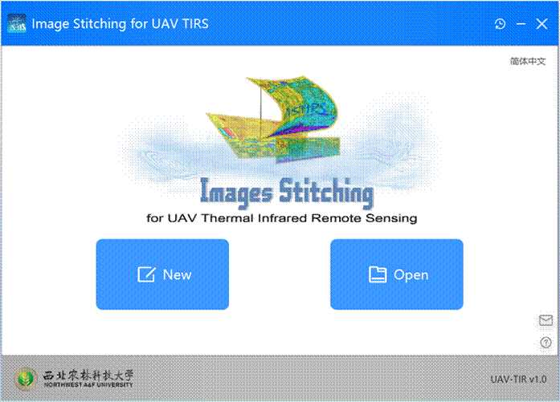
2£ÆCreate a project
Click °∞New°± or drag from system File
Manager into the image folder that you want to stitch.
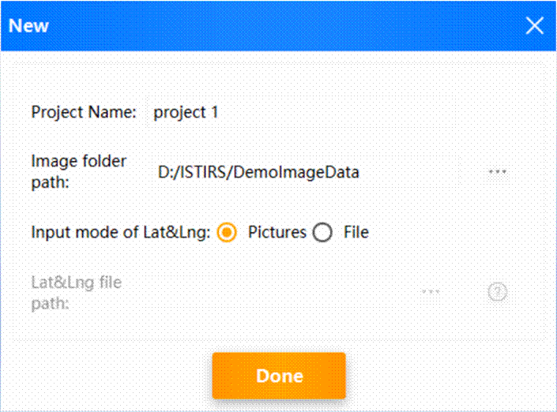
- Enter
the project name, select the image path to be stitched, and enter the latitude
and longitude data.
- Note:
There are two ways to input latitude and longitude data:
1.Input latitude
and longitude data from the image: The image is required to carry latitude and
longitude data.
2.Enter
longitude and latitude data from the file: TXT or Tetracam
flight log file.
TXT
file format is :(image name, latitude, longitude, height).
Example:
DJI_0006. JPG, 36.8284518611111, 116.570739083333, 118.
3£ÆOpen a project
- Click "Open" to
reopen the previously created project.
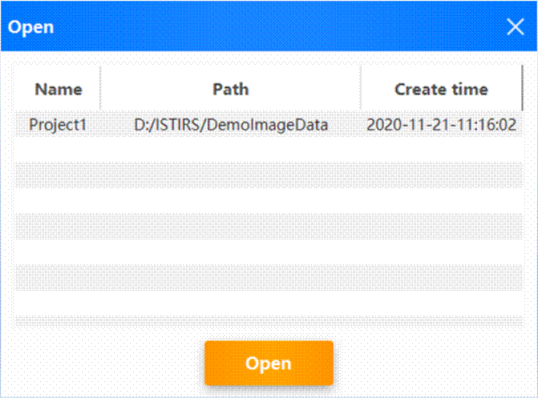
After the
above two methods, we have successfully imported the project to be spliced.
Next, let's take a look at the details of the project.
B. Projects
1.
Projects
The software
supports importing multiple projects for sequential stitching to save you time.
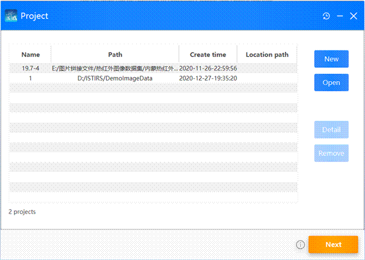
- Click °∞New°±or drag from system File Manager into
the image folder that you want to stitch.
- Click °∞Open°±to import the previously created
project.
- Click "Remove"
to remove the selected project from this stitching.
- Click "Detail"
to view project details.
2.
Detail of project
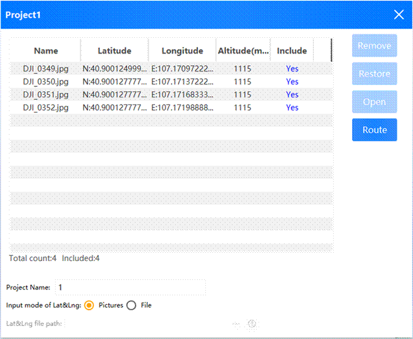
- Double-click the list or click°∞open°±to view the selected image.
- Clicking on the list to displays
the contents of the corresponding image.
- Click "Remove" or press DELETE to remove the selected image from
this project, that is, the selected image does not participate in this
stitching.
- Click °∞Restorel°±to rejoin the project with the selected image.
- After holding down CTRL or SHIFT, click on the list to select multiple.
- Modify project information.
Don't worry,
the list of pictures isn't intuitive. We've taken it into account.According to the latitude and longitude data
of the picture, the flight path is plotted.So let's
see how intuitive this is.
3.
Route
Click on
"Route" to view the visualized flight path of the UAV.
Visually
understand the flight path and shooting location of the UAV by means of
visualization.

- Click "Record Point" to view an image of this record point.
- After holding down CTRL or SHIFT, click "Record Point" to select
multiple options.
- Right click "record point" and click "DELETE" or press
"DELETE" to remove the corresponding image of the selected
"record point" from this stitching.
- Of course, it's worth knowing that flight path data can be interacted with
the list of image data in the previous page, so go ahead and give it a try!
Now that the
project is configured, let's configure the parameters needed for stitching!
Note: The
algorithm is in the testing stage, and this version temporarily supports no
more than 200 images for a single project. If the number of images for a single
project exceeds the number, click "Detail" to select the image to
stitch.
C. Settings
Each item
can have its own set of parameters, and in the subsequent stitching, each item
will use its own corresponding parameters to stitch the image.
1£ÆSet the project parameters separately

- After entering the parameters, click "Save" to set the
configuration of the selected parameters separately.
Of course, isn't
it a little tedious to set it up separately? Don't worry, we've thoughtfully
designed "parameter templates" that will be saved on your computer
and will be there the next time you use them ~ and you can batch them to your
project.
Let's take a
look at how parameter templates work!
2£ÆParameter
templates
Click °∞Add parameter set°±
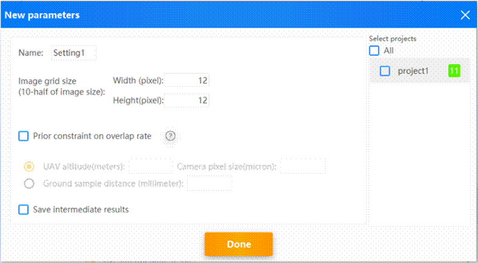
- Once you have configured the parameters, select the items in the right
list that you want to take this set of parameters.
- We can also double-click the Parameter Set list to modify it again.
The
parameters are configured, so let's start stitching the project!
D. Stitching
Click
"Start" to enter the stitching page.
1£ÆRunning
The
software concatenates selected items sequentially. Wait a moment please...
During
this period, we can relax our eyes, check the corresponding parameters of the
project, or cancel a project.
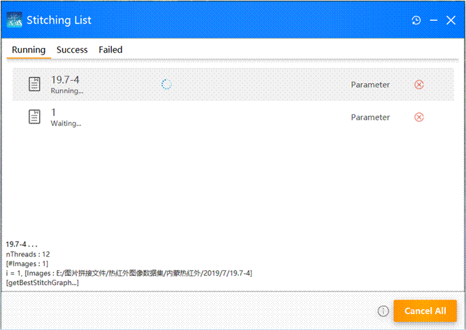
2£ÆSuccess
After the
item is successfully stitched, it moves to the stitched completion list.
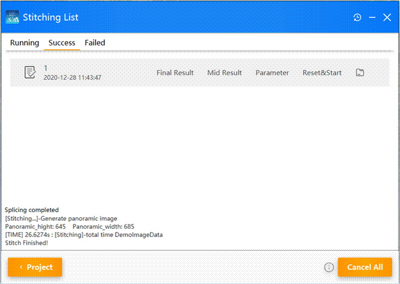
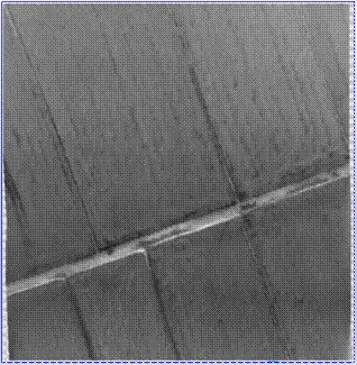
Successfully stitched
image
Let's take a
look at the successful stitching results!
- Click "Final Results" to open the Mosaic result image directly.
- Click "Mid Results" to open the folder that holds the
intermediate data saved in the stitching.
- Click "Reset&Start". We can modify
the parameters and stitch the project again.
- Click  to open the folders.
to open the folders.
3£ÆFailed
Of course,
project stitching may fail due to parameters, stitching images and other
reasons.
In the stitching failure list,
we can get the reasons for the failure of the project. After knowing the
reasons for failure, we can adjust the project or parameters according to the
reasons for error reporting.
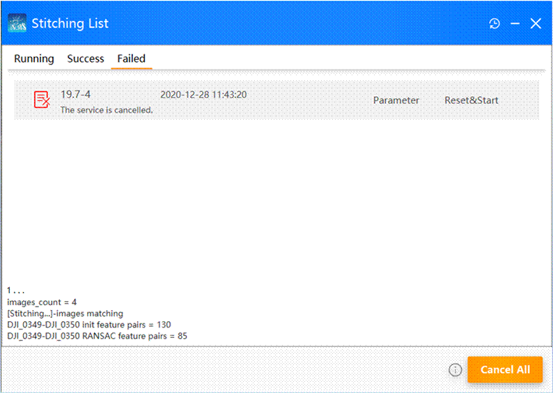
- Click "Parameter" to view the parameters.
- Click "Reset & Start" to adjust the parameters and stitch
the project again.
So far, we've
succeeded in getting the results of the stitching project.
The software
will also kindly save the stitching results and other stitching information to the
local, we can check the stitching history at any time.
Next, let's
look at the stitching history feature.
E. Stitching history
As you may have noticed, there is
a button in the upper right corner of the software. Clicking on it will bring
up the "History" page.
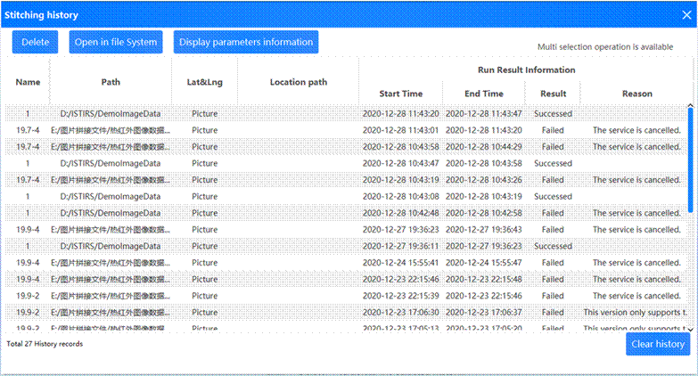
- In this page you can view all the stitching history.You can view project information, view
parameter information, view failure reasons, and view stitching results.
- Click °∞Delete°± to delete the selected history.
- Click "Open in file System" or double-click the list to open the
stitching results folder.
F. Go Further
Stitching
cache files: Open the stitching result file of a software project and you will
see many cache files that will help you do research or get more useful
additional information.
The contents
of each file record are described below:
-
Result : Store
the stitching results and the cached data in the stitching process.
-
RuntimeDetailInfo.txt
: Running Log°£
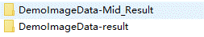
-
ProjectName-Mid_Result : Store stitching intermediate cache data.
-
ProjectName -result : The result.
G.
Other
When you have
questions about a button, a text message, etc., you can put the mouse over it
for a while, which may be helpful to you.